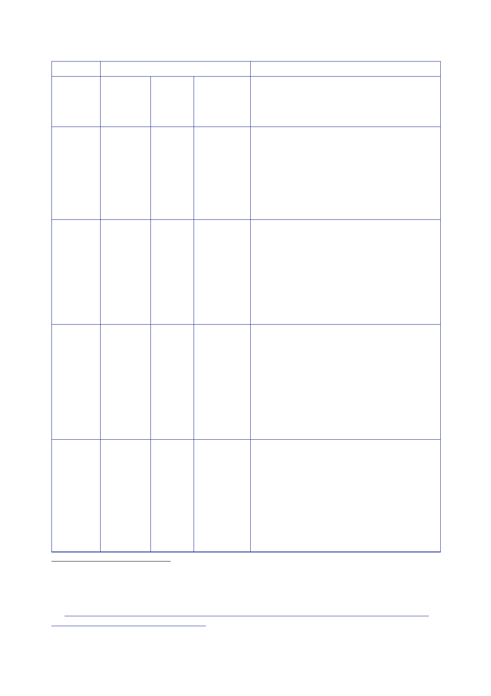

The Report
of the Iraq Inquiry
Period
Estimated
total
Notes
Iraq Iraq
and Including
Jordan
known
ArmorGroup
posts
March
2004
116
Figures
based on:
2 senior
officers
73 officers
in Jordan
24 officers
at az‑Zubayr
5 PSNI
officers about to deploy to Basra
11 MOD
officers
1 officer
in Baghdad
September
2004
98
138
Figures
based on:
2 senior
officers
23 officers
at az‑Zubayr
6 officers
– a combination of PSNI and MOD
officers
40 IPAs
ArmorGroup
12 officers
in Baghdad
55 officers
in Jordan
October
2004
Comprising:
11 officers
helping in the MOI
6 mentoring
senior police in Basra
21 at
az‑Zubayr
5 at
Baghdad Police Academy
The Inquiry
has added 2 senior officers and
a staff
officer to the total. It appears from
subsequent
documents that those posts were
consistently
held during this time.
November-
December
2004
(only
25
confirmed
–
see
notes)
Comprising:
14 at
az‑Zubayr (down from 19 but with the
desire to
recruit more)
11 PSNI
posts
The Inquiry
has added 2 senior officers, a
staff
officer, and 16 officers (that were based
in
Baghdad). It appears from subsequent
documents
that those posts were consistently
held during
this time.
1412
Minute Owen
to ISSU [junior official], 8 March 2004, ‘Iraq: Contracting of
Police Monitors’ attaching
Minute ISSU
[junior official] to Buck and PS [FCO], 3 March 2004, ‘Iraq:
Contracting of Police Monitors’.
1413
Statement
Asquith, 11 July 2010, ‘The British Contribution to the Development
of Iraqi Police
Capabilities,
2004‑6’.
1414
Minute Owen
to Crompton, 12 October 2004, ‘Iraq: Police Service’ attaching
email Davies to Owen,
6 October
2004, ‘The Iraqi Police Service’.
1415
Teleletter
Hayward to Dodds, 5 November 2004, ‘Southern Iraq: Civilian
Police’.
410